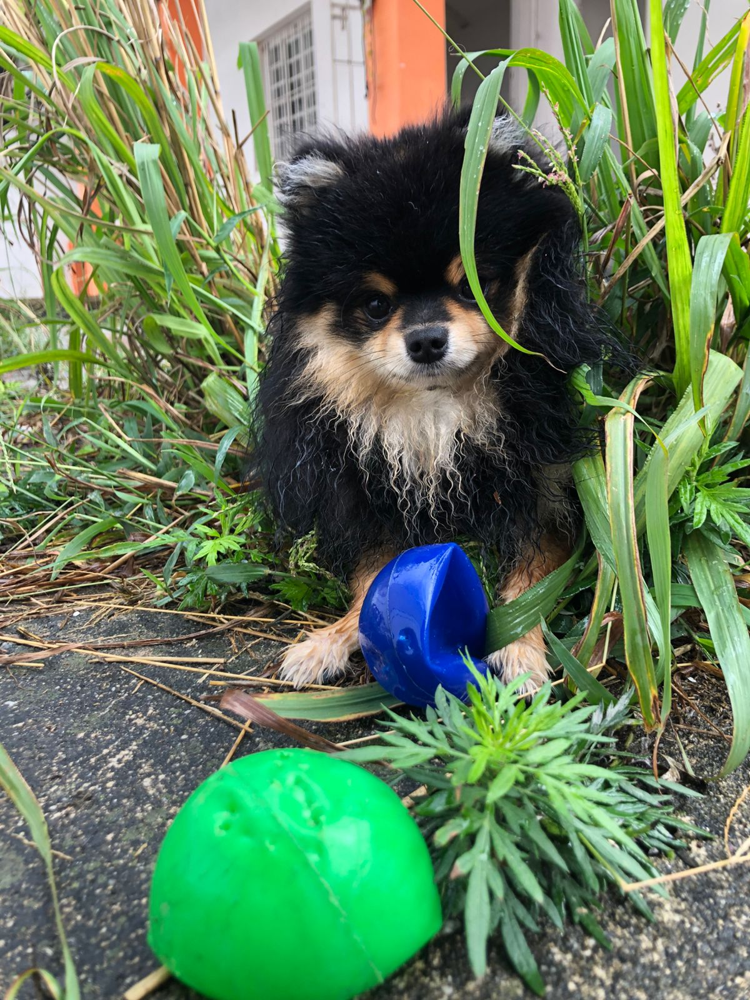
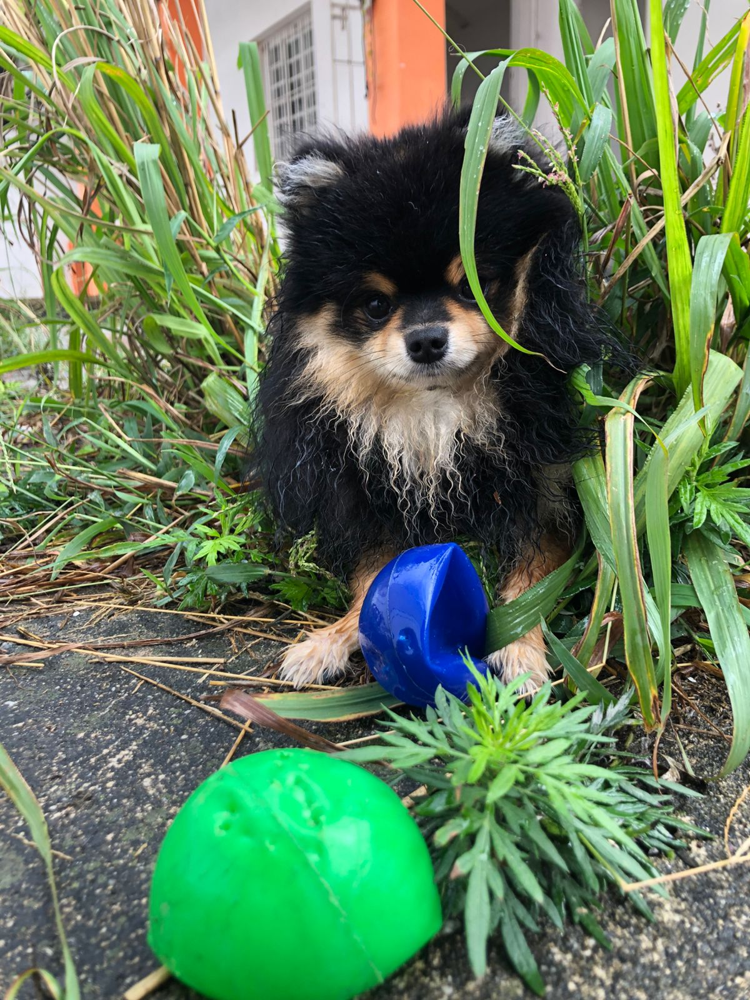

Atendimento médico veterinário para cães, gatos e pets exóticos.
Protocolos completos, atualizados com vacinas éticas, e aplicado de forma low stress para proteger seu pet.
Exames de sangue, urina, fezes, bioquímicos e mais.
Cirurgias eletivas e emergenciais, com segurança e qualidade.
Limpeza, extrações e cuidados com a saúde bucal do seu pet.
Ambiente seguro, monitoramento constante e cuidados individualizados para pets em recuperação.
Alimentação natural equilibrada e balanceada individualmente para o seu pet.
Diversas especialidades para um diagnóstico mais preciso e rápido.
Ambiente seguro e supervisionado, com atividades, brincadeiras e descanso para o bem-estar físico e emocional do seu cãozinho.


 



Respeito à vida, ética profissional, comprometimento e amor.
A missão da Health Vet Center é oferecer um atendimento de excelência, garantindo bem-estar, saúde e qualidade de vida aos pets e tranquilidade aos seus tutores.
Endereço: Rua Washington Luiz, 70 - Suzano
Funcionamento:
Segunda a Sexta: 09:00 às 19:00
Sábado: 09:00 às 16:00
Whatsapp: (11) 2561-1922
Email: healthvetcenter@gmail.com